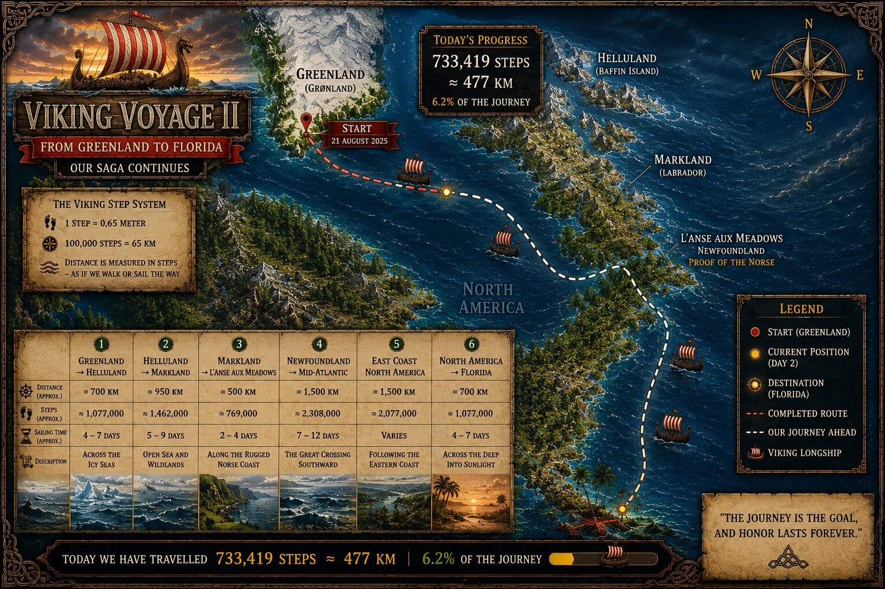

DAY 2
Several snapshots survive from the early voyage. This log preserves the latest recovered Day 2 total while documenting the earlier map separately.

THE FLEET IS UNDERWAY.
The first full stretch of the voyage was taking shape. Twenty-nine Vikings were aboard, and the latest recovered Day 2 snapshot records 897,818 steps — approximately 583.6 kilometres.
An earlier map from the same day survives as well. It records 733,419 steps and approximately 477 kilometres. Both belong to the archive; neither should be mistaken for the other.
THE SHORE IS BEHIND US.
THE VOYAGE HAS BEGUN.
— Captain Hákon
AN EARLIER DAY 2 MAP SURVIVES
The recovered original map is an earlier Day 2 snapshot showing 29 Vikings, 733,419 steps and approximately 477 km. The archive keeps the later 897,818-step snapshot as the Day 2 total while preserving the earlier map as part of the day's record.